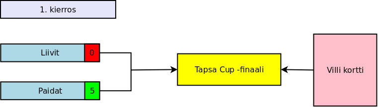
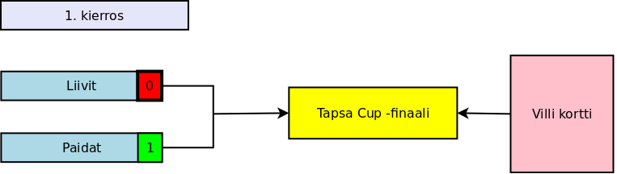
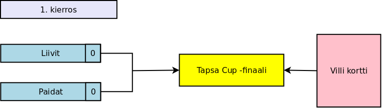

Julkaistu 13.5.2018
Kimmon poissaollessa Kjell on tehnyt ansiokkaasti tilastoja jo pidemmän aikaa ja aina yhtä täydellisesti. Kiitos Kjell! Nyt hän on laajentanut repetuaariaan myös otteluraporttien puolelle. Tässä hänen kommenttinsa pudotuspelien osaotteluista 6 ja 7.
Tunnelma oli käsinkosketeltavan sähköinen kun Liivien kapteeni Markus pitkän ulkomaan pelikiertueensa jälkeen hölkkäsi areenalle juuri pestyssä ja lankatussa teknisessä asussaan. Myös voimapelaaja Ville oli panostanut suuresti kambäkkiinsä leikkaamalla tukkansa. Peli alkoikin kovalla sykkeellä, Liivit olivat erityisesti hioneet joukkuehenkensä tappiinsa. Esimerkkinä vahvasta tiimi-spiritistä voisi käydä seuraava kannustushuuto: ”Mitä vittua, Gretski!?” Kyllä, tuohon kuuluu sekä huuto- että kysymysmerkki.
Medialle oli vuodettu huhu, että Tapsa-Cup -finaalissa Paitojen kapteenina toimisi Antti ja Liivien kapteenina Markus. He valitsisivat joukkueet pelaajien pudotuspelien suoritusten perusteella. Tämä huhu aiheutti molemmille puolille silmin pistävää hermostuneisuutta. Erityisesti Tapsa itse oli varsin huolestunut pääsystä finaaliin. Hän teki kuitenkin scouteille valinnan helpoksi; tempaisi ensimmäisessä pelissä rannelaukauksen lähes nollakulmasta aivan ylämummoon!
Kamppailu oli raivoisaa ja tasaisen oloista mutta Paidat pääsivät niskan päälle koordinoidumman syöttöpelinsä ansiosta. Tähän ei purrut edes Markuksen kuviot C3, B7, B2 eikä varsinkaan C5. Paidat voittivat sekä alkuerän että Granden ja johtaa nyt alkulohkoa 7-0!
Jälkipyykin pesun aikana keskusteltiin Antin mahdollisesta jääviydestä. Kuinka on mahdollista, että Antti on aikaisemmissa lausunnoissaan ylistänyt Liivien avainpelaajia, mutta heti seuraavissa peleissä käykin ilmi, että hän on kesken alkulohkojen siirtynyt Paitojen kapteeniksi? Oikeusoppineiden mielestä tämä ei ole täysin ongelmatonta ja oikeuskanslerilta odotetaan yhä lausuntoa.
Alkulohkot jatkuvat kuitenkin 15. toukokuuta, eikä Markus ole huolestunut Liivien tilanteesta
- Tämänpäiväiset tappiomme johtuvat yksiselitteisesti mediapelistä! Olen vakuuttunut, että jo seuraavissa peleissä syrjäytämme pahimman uhkaajamme, Villi Kortti -tiimin!
Julkaistu 5.5.2018
Kevät on herättänyt tuntemattoman vieraskynäilijän uuteen eloon. Tässä hänen mietteitään.
Upea Tapsa Cup -pudotuspelisarja saa jatkoa 8.5. pelattavalla kuutospelillä ja arvatenkin jännitysnäytelmä jatkuu käsikirjoituksen mukaisesti seuraavassa seiskapelissä. Liivit kun ovat juuri parhaimmillaan putouksen reunalla, kovan paineen alla.
Liivien kapteeni Markus tekee paluun joukkueeseen ulkomaan pelikiertueen jälkeen, mikä nostaa entisestään panoksia. Myös tulokastähti Ville ja Timo pelaavat jälleen suurella sydämellä ja vielä suuremmalla mailalla.
Voimahyökkääjä Markus on myös loukkaantumiskierteen selätettyään tutussa elementissään hyökkäyksessä vaikka loistokkaalla urallaan aina osannut nähdä pelin isomman kuvan. Markus muistuttaa saman tien, että pelaajien profiili ja voimahyökkääjän käsite sinänsä ovat muuttuneet radikaalisti 10-15 vuoden aikana. Hän puhuu pelin evoluutiosta.
– Tämä sukupolvi ajattelee pelistä eri tavalla. Ne jätkät ovat harvassa, jotka pelaavat oikeasti todella kovaa. Nyt painotetaan eri asioita: juoksua, peliälyä ja taitoa, Markus sanoo. Me kokeneemmat pelaajat joudumme kovan rääkkiin ja tämä näkyy myös palautumisessa kuten Antin ajoittaisina poissaoloina.
Hyökkääjä kritisoi myös Villen mediarumbaa: "Se on vaikea paikka". Suomalaislupauksen tulokaskautta voi kuvailla monella ylistävällä adjektiivilla. Joukkuekaveri Antti myös ihmettelee ajoittain hyvinkin negatiivista kirjoittelua.
– Minusta hän teki loistavaa työtä käsitellessään kaikkea huomion. Se on vaikea paikka olla, Antti kommentoi Villen mediamylläkkää.
60% voittoprosentti on hurja tulokaspelaajalle. Antti kertoi seuranneensa innolla Villen kypsää tekemistä läpi kauden.
– He (media) ovat verranneet häntä nuoreen Juha-Matti Aaltoseen koko vuoden. He haluavat rakentaa hyvän juonen ja tarinan. Ja ihmiset kysyvät, että "mikä Villeä vaivaa, kun hän ei ole tehnyt maaleja viiteen minuuttiin?" Mutta 26-vuotiaana, kuinka monta maalia hän on tehnyt? Minusta me olemme tyytyväisiä häneen tasoonsa, myös Markus jyrähtää.
Kaiken sirkuksen keskellä suomalaistulokas on itse pitänyt päänsä kylmänä. Medialle annetut kypsät kommentit ovat merkki siitä, ettei liivien tähti hirveästi säiky huomiota.
– Vaikuttaa siltä, että hän ei anna kaikkien juttujen vaivata. Hän on todella tyyni ja rauhallinen paineen alla. Hän näyttää vain loistavan isoissa aikuisten peleissä, Antti ylisti.
Julkaistu 29.4.2018
Kevään 2018 Tapsa Cup -pudotuspelit alkoivat 10.4. ja päättyvät 29.5. Huhti-toukokuun vaihteessa pudotuspelit ovat edenneet melkein puoliväliin, joten on perinteisen VAjaa Puoliväli PUdotuspeleissä -juhlan aika. Koko kansan suussa tämä nimihirviö on lyhyemmin vain Vappu. Koska 1.5. ei pelata, omissa paidoissaan pelaavat Paidat ja punaisissa huomioliiveissä pelaavat Liivit saavat ansaitun vapaaviikon.
Kun tarkat tilastot täyttivät 3 vuotta 6.12.2017, vietettiin koko maassa kansallista vapaapäivää ja ympäri maan järjestettiin monia juhlatilaisuuksia. Vajaa puoliväli pudotuspeleissä -juhla on samantasoinen kansanjuhla, jossa juhlitaan Tapsa Cup -pudotuspelejä railakkain menoin ympäri maata jo maanantaista alkaen. Varsinainen juhlapäivä eli tiistai on luonnollisesti kansallinen vapaapäivä!
Suosikkijoukkueen tuki näkyy myös juhlaväen asuvalinnoissa. Paitojen kannattajat juhlivat usein varsin epämuodollisissa t-paidoissa tai vastaavissa. Sitä vastoin Liivien kannattajien juhlatyyli on usein hienostuneempi ja asuksi valikoituu usein puku liivillä tai ilman. Kolmas joukkue, jonka kannattajat juhlivat näyttävästi pudotuspelien puoliväliä, on Haalarit. Haalarikansaa onkin kadut pullollaan. Vaikka Haalarit ei ole koskaan pelannut yhtään ottelua kuntosählyn runkosarjassa, on se noussut kannattajien keskuudessa lähes kulttimaineeseen. Haalarien joukkuetta on kyllä yritetty nostaa kuntosälyyn, mutta pelaajayhdistyksen vastustus on ollut päättäväistä: "Ei mitään tollasta. Eihän me missään haalareissa aleta pelaamaan. Sehän on ihan älyttömän kuuma.". Aika näyttää saavatko fanit tahtonsa läpi ja kuuluuko Haalarit joskus kuntosählyn vakiojoukkueisiin.
Pudotuspelien puolivälijuhlaan koristepuolella kuuluvat pallopelin hengessä tietysti ilmapallot, jotka ovat etenkin nuorempien fanien mieleen. Asustepuolella juhlan symboliksi on noussut pienellä mustalla lipalla varustettu valkolakki, jonka valkoinen kupoli edustaa teeman mukaisesti valkoista sählypalloa. Kansalaiset ympäri maan kantavat huhti-toukokuun vaihteessa - ja joskus pidempäänkin - näitä valkolakkeja osoittaakseen tukeaan lajille. Monissa kaupungeissa on muodostunut perinteeksi pukea tällainen valkoinen hattu paikallisen merkkipatsaan päähän. Lakituksen kansallinen huippuhetki on, kun Haavis Amanda saa kutreilleen tämän valkokupolisen sählyhatun. Yleensä juuri Haalareiden kannattajat pukevat patsaita ilmeisesti siinä toivossa, että heidänkin joukkueensa pääsisi seuraavalla kaudella pelaamaan.Myös tasavallan poliittinen kerma osallistuu näkyvästi pudotuspelin puolivälijuhlan juhlintaan pitämällä puheita ja marsseja. Puheissa korostetaan hienosti juuri työväen roolia ja merkitystä, mikä onkin todella hieno ja tärkeä kannanotto. Juuri se duunariväki, joka rouhii kulmissa, blokkaa maalilla ja ylläpitää keskikentän träppiä, ansaitsee kunniaa enemmän kuin se normaalisti pelissä saa. Se perustyö on kuitenkin monen voitetun pelin ja mestaruuden kulmakivi. Poliitikkojen puheiden yhteydessä järjestetään usein myös marsseja, joilla ilmeisesti fiilistellään sitä tunnetta, kun lähdet marraskuun sateessa tai helmikuun pakkasessa klo 21:30 marssimaan kohti areenaa. Hienoja eleitä nämäkin tilaisuudet!
Juhlan jälkeen koittaa paluu arkeen. Pudotuspelit jatkuvat Paitojen johtaessa Liivejä murskaavasti voitoin 5-0. Seuraavat pudotuspelit pelataan 8.5. ja viimeiset 29.5. Talvikauden 2017-18 päättävä Tapsa Cup finaali on (ilmeisesti) 5.6.2018.
Julkaistu 29.4.2018
Kevään 2018 Tapsa Cup -pudotuspelit etenivät tiistaina 24.4. kolmanteen pelipäivään, kun Paidat (omissa paidoissaan pelaavien joukkue) ja Liivit (punaisessa liivissä pelaavien joukkue) kohtasivat tiistai-illan hämärtyessä. Ensimmäistä kertaa tänä keväänä joukkueet olivat lähes täysissä kokoonpanoissa, kun molemmilla joukkueilla oli maalivahdit. Kimmo2 ja Otto2 olivat uhrautuneet joukkueiden puolesta ja vetäneet maalivahdin kamppeet ylleen. Liivit oli hävinnyt pudotuspelien kaikki 4 ottelua, joten tänään oli kunnian palautuksen aika.
Valitsijamiesyhdistyksen puheenjohtaja Make oli palannut viikon tauon jälkeen rooliinsa ja muodosti joukkueet seuraavin kokoonpanoin
Paidat: Antonis, Kjell Gretski, Make, Martti ja Kimmo2 maalivahtina
Liivit: Antti, Henkka, Joni, Kimmo, Otto Zaborski ja Otto2 maalivahtina
Joukkueet vaikuttivat tilastojen valossa melko tasaisilta. Paidoilla tulikuuma Martti oli pelannut ja voittanut kevään jokaisen pudotuspelin. Kimmo2 oli myös voittanut sen ainoan pelaamansa. Lisäksi hän venyy maalilla aina paraatipelastuksiin. Kimmo2 on myös voittanut 10 edellistä otteluaan, joten hänellä oli tiistaina mahdollisuus nousta voittoputkitilastossa toiselle sijalle. Gretski on myös menestynyt pudotuspeleissä loistavasti häviten toistaiseksi ainoastaan yhden ottelun. Toisaalta Make ja Antonis ovat hävinneet jokaisen pudotuspelinsä, minkä lisäksi Make venyi keväällä historialliseen 10:n ottelun tappioputkeen.
Liivit saivat yhden vaihtomiehen, josta on aina etua. Pelaajien meriitit olivat kaksijakoiset. Antti, Henkka ja Kimmo ovat kolminkertaisia Tapsa Cup -voittajia. Otto Zaborski johtaa parien voittotilastoa Martin parina ja Otto2 on hävinnyt vain yhden ottelun ollessaan maalivahtina. Näissä pudotuspeleissä Liivien kuumimmat pelaajat ovat olleet Joni ja Otto Zaborski, jotka ovat molemmat voittaneet kolme peliä neljästä pelaamastaan. Toisaalta loput liiviläiset - Antti, Henkka, Kimmo ja Otto2 - ovat voittaneet yhteensä ainoastaan yhden pudotuspelin ja hävinneet 7!
Peli-ilo oli nähtävissä heti alussa, mutta pelillisesti meno oli melkoista kaaosta: syötöt eivät menneet perille ja maalipaikkoja hukattiin puolin ja toisin. Ainoastaan maalivahdit pelasivat pudotuspelien vaatimalla tasolla heti alussa. Lopulta Liivit löi pelin alkutahdit Antin laukoessa pelivälineen vastustamattomasti Kimmo2:n ohi. Heti seuraavassa tilanteessa nuori Antonis tarjoili maalin edessä aivan vapaana olleelle nuorekkaalle Gretskille nappisyötön, josta tämä lämäsi kevyellä lämärillä Liivien verkot tötterölle.
Kaaosmaiset otteet jatkuivat edelleen. Paitojen alin mies syötti hyökkäystilanteessa karmaisevan harhasyötön, jonka seurauksena Liivit pääsi 2-0 hyökkäykseen. Syötellen edennyt hyökkäys eteni Paitojen maalin edustalle, sitten maalille ja lopuksi vielä maalin taakse. Eikä maalia koskaan tullut. Myöhemmin Liivien pelaajat pääsivät vielä 3-0 hyökkäykseen, mutta Kimmo2 maalilla syöksyi palloa vastaan kuin hylje kalan perään eikä Liivien maalitili lisääntynyt tälläkään kertaa. Ihme touhu jatkui myös toisessa päässä. Paitojen pyörittäessä hyökkäyspeliä Make kiersi pallon kanssa Liivien maalin takaa. Jostain kumman syystä Kjell Gretski yritti ilmeisesti pysäyttää Maken heittämällä mailaansa! Myöhemmin Gretski kommentoi tilannetta sanomalla, että hän vain horjahti ja maila vain liukui Maken suuntaan. Oli miten oli, mutta monille tämä toi mieleen ensimmäisen pudotuspelin, jossa Kjell "vahingossa" blokkaili joukkuetoverinsa Maken laukauksia.
Vähitellen Liivien onnistui kartuttaa johtoaan ja peli eteni tilanteeseen 7-2. Sitten alkoi Liivien musta jakso. Mikään ei onnistunut, jolloin he ottivat yhä enemmän riskejä. Kun Liivien puolustuspeli oli heikkoa, Paitojen onnistui kiriä tasoihin ja lopulta johtoon maalein 15-10. Sitten Liivit sai pelinsä kulkemaan. Paitojen johtaessa 18-15 Liivien hurmos vain jatkui. Lopulta trilleri eteni tilanteeseen 19-19 ja voitto oli molempien joukkueiden saavutettavissa. Liiveillä olikin monta hyvää paikkaa aivan maalin edessä. Lopulta Paidat kuitenkin lähtivät viimeiseen ratkaisevaan hyökkäykseen ja Martti ratkaisi ottelun Paidoille tiukalla rannekudilla. Voitto oli erityisen juhlallinen Martille, joka otti sadannen voittonsa tilastohistorian aikana. Kaikkiaan ratkaisumaali oli Martille seitsemäs ja kolmas kevään pudotuspeleissä.
Liivien kriisi jatkuu siis edelleen ja voittosarake näyttää tyhjää. Vaikka pudotuspelit eivät vielä ole ihan puolivälissä, on Liivien suora finaalipaikka enää teoreettinen. Seuraavan kerran Liivit pääsevät hakemaan voittoa, kun pudotuspelit jatkuvat 8.5.

Julkaistu 22.4.2018
Pudotuspelit jatkuivat myöhään tiistai-iltana, kun Paidat ja Liivit iskivät jälleen yhteen. Peliin tuli taas lisää vauhtia, kun sarjan pitkäaikaisin maalivahti Tapsa Cup -finalisti Niklas liittyi mukaan kahden kuukauden tauon jälkeen.
Valitsijamiesyhdistyksen puheenjohtaja Make oli estynyt osallistumaan tilaisuuteen, joten joukkueiden muodotus jäi tällä kertaa muiden harteille. Arpa jakoi pelaajat seuraavasti
Paidat: Joni, Kjell, Martti ja Otto. Maalivahtina oli puulasse.
Liivit: Antonis, Kimmo, Otto2, Timo ja Niklas (maalivahti)
Alusta alkaen Liivien peli-intensiteetti oli korkealla tasolla. Nuori Antonis tälläsi kaksi ensimmäistä vetoaan maaliin ja Liivit 2-0 johtoon. Liivien odotellessa hattutemppua Paidat kuitenkin heräsi ja aloitti kovan painostuksen. Pysäyttäessään Paitojen syötön Liivien maalin edessä, Kimmon onnistui ohjaamaan pallon omaan maaliin. No, eipähän ainakaan mennyt syöttö perille. Tämä ei jäänyt illan ainoaksi vaan kaikkiaan 5 eri pelaajaa onnistui oman maalin teossa. Paitojen tiiviimpi joukkuepeli toi lopulta selvän 10-5 voittoon. Pelin ratkaisi lopulta Martti, josta tuli kaikkien aikojen vanhin pudotuspelin ratkaissut pelaaja.
Ensimmäisen pelin jälkeen Liivit teki kovan päätöksen ja myi Niklaksen Paidoille. Harvemmin joukkueet myyvät ainoan maalivahtinsa kesken pudotuspelien, mutta nyt Liivien oli yksikertaisesti pakko hakea peliin uutta suuntaa. Muilta osin kokoonpanot pysyivät samoina. Pelistä kehkeytyikin tasainen trilleri. Heti alussa Paitojen Joni taisteli Liivien maalin takana pallosta ja löi miinuskulmasta pallon onnekkaasti maaliin Timon jalan kautta. Otto2 reagoi tähän onnekkaaseen tapahtumaan huikkaamalla Jonille
- Jumalauta, et kai sä tuulettanu?
Johon Joni innokkaasti vastasi
- Joo!
Pelin painopiste aaltoili tasaisesti molemmissa päissä ja pitkään näytti, että Liivit ottaisi ensimmäisen pudotuspelivoittonsa. Lopulta kuitenkin Paitojen onnistui voittaa pienimmällä mahdollisella erolla.
Paitojen raaka rynnistys toisessa pelissä ei jäänyt ilman uhreja. Taiston tuoksinassa Timo sai kovan iskun koipeensa, johon nousi tennispallon puolikkaan kokoinen patti. Vaikka Timo sankarillisesti taisteli toisen pelin loppuun, ei hän voinut enää kolmannessa pelissä pelata. Joni otti Timon paikan, joten kolmas peli pelattiin seuraavin kokoonpanoin
Paidat: Kjell, Martti, Otto ja Niklas (maalivahti)
Liivit: Antonis, Joni, Kimmo ja Otto2. Maalivahtina oli puulasse.
Liiveille tarjoutui tuhannen taalan paikka ottaa vihdoinkin se ensimmäinen voitto, koska Paidoilla pelasi koko pelin alivoimalla. Peli alkoikin Liivien tahdissa, kun Joni toi kaivattua vahvistusta hyökkäyspäähän. Lopulta Paidat olivat kuitenkin vahvempi ja Otto Zaborski kikkaili loppunumeroiksi 10-7.
Paidat johtaa nyt pudotuspelisarjaa murskaavasti voitoin 4-0 ja monissa muissa sarjoissa Liivit olisi jo kesälomalla. Liivien päävalmentaja ei kuitenkaan myönnä, että joukkueessa olisi kriisitunnelmaa. Päinvastoin, hän vetoaa nykyisin muissakin lajeissa paljon esillä olevaan näkemykseen
- Voitettiin maalipaikat selvästi.
Joukkueella on kieltämättä ollut myös silkkaa huonoa tuuria joukkueiden muodostuksessa. Siksi Liivit on ollut viime aikoina aktiivisena kulissien takana käytävissä siirtoneuvotteluissa ja villejä huhuja on liikkunut Aasian pään kanssa käydyistä pelaajakaupoista. Liivien valmentaja vahvistikin neuvottelujen olevan loppusuoralla
- Ensi viikolla Markus siirtyy Aasiasta takaisin kotoiseen liigaan ja meillä on 50% todennäköisyys saada hänet Liiveille.
Kysyimme asiaa Markuksen edustajalta Timolta, joka myös vahvisti tämän uutispommin
- Kyl se vissiin ens viikolla tulee.
Jännitys kasvaa! Tuleeko Markus tiistaina pelaamaan? Meneekö hän Liiveille vai Paidoille? Onnistuuko yksi mies kääntämään pudotuspelien suunnan? Näihin kysymyksiin saamme vastauksen ensi tiistaina, kun pudotuspelit jatkuvat!
Julkaistu 15.4.2018
Paidat ja Liivit avasivat myöhään tiistai-iltana kevään 2018 Tapsa Cup pudotuspelit. Kummatkin joukkueet olivat noudattaneet tiukkaa mediaboikottia eikä pudotuspeleistä ei edes keskusteltu.
Joukkueet lähtivät otteluun seuraavilla kokoonpanoilla (molemmilla puuveska).
Paidat: Joni, Kimmo, Kimmo2 ja Martti. Maalivahtina puulasse.
Liivit: Antonis, Henkka, Kjell Gretski, Make ja Otto. Maalivahtina puuniklas.
Ottelun korkeat panokset olivat selvät, koska molemmat joukkueet olivat marssittaneet kentälle A-luokan pelimiehet. Oli runkosarjassa paljon voittoja kahmineita ja suurella voittoprosentilla pelanneita. Oli pitkän voittoputken tehneitä ja paritilastoissa loistaneita. Lähes kaikki olivat myös Tapsa Cup -mestareita.
Molemmat joukkueet lähtivät otteluun pirtein ottein. Alussa erityisesti Kjell Gretski hääri Paitojen maalilla ylimpänä Liivien palaajana. Gretski oli kuitenkin ymmärtänyt roolinsa ihan väärin, koska hän keskittyi maalinteon sijaan blokkaamaan joukkuetovereidensa vetoja vastustajan maalin edessä.
- Ei anna meikälle maalipistettä, totesi Make Gretskin blokatessa jo toisen napakan lämärin lyhyen ajan sisällä. Make myös epäili, että juuri näiden epäilyttävien pelitapahtumien takia Veikkaus ei ota pelikohteikseen kuntosählyn otteluita.
Paitojen johtaessa jo 4-1 Antonis oli herännyt päivänokosiltaan ja ehtinyt areenalle, joten hänet sijoitettiin vahvistamaan Liivien rivejä. Liivit pelasikin 5-4 ylivoimalla koko loppupelin ajan. Pian tämän jälkeen Kjell tuli tolkkuihinsa ja onnistui vihdoinkin tekemään maalin – ja vielä hienon sellaisen. Kjell ohjasi kovan laukauksen suoraan ilmasta maaliin. Ja vielä tolpan kautta!
Alivoimasta huolimatta Paidat kasvatti etumatkaansa tasaisesti, kunnes se johti 7-2. Pian tämän jälkeen puulassen pelivire alkoi kadota ja Liivit takoi maalin toisensa perään, kunnes Liivit johti 10-7. Sitten Paidat sai peliotteensa takaisin ja aloitti puolestaan maali-iloittelut. Tunteet kävivät kuumina, kun pallosta taisteltiin pudotuspeleihin kuuluvalla antaumuksella.
Rehti kamppailu sai kunnian kilpeensä särön, kun taistelun tuoksinassa Kjell juoksi vastustajan maalille ja selkeällä potkuliikkeellä potkaisi pallon maaliin. Jostain käsittämättömästä syystä maali hyväksyttiin! Areena olisi varmasti hukkunut buuauskonsertiin, jos paikalla olisi ollut yleisöä. Mikä käsittämätöntä, kaksi minuuttia myöhemmin maali kuitenkin hylättiin! Vaikka tuomarilinja oli muuten varsin reilu, oli tämä selvä merkki tuomaripelin merkityksestä myös tänä keväänä.
Pelin loppuvaiheet taisteltiin läpi varsin tasaisissa merkeissä, mutta lopulta Paitojen maalitekotahto oli hieman suurempi. Loppuniitin laittoi Liivien maalin kattoon Joni, joka oli pelaamassa yli kuukauden tauon jälkeen. Paidat voitti lopulta numeroin 20-17.
Paidat siis voitti ensimmäisen ottelun, mutta Liiveillä on reilusti aikaa saada pelinsä kulkemaan. Seuraava ottelu on ensi tiistaina ja pudotuspelejä pelataan toukokuun loppuun asti alla olevan kaavion mukaisesti.

Julkaistu 8.4.2018
Kuntosählyn talvikauden 2017-18 runkosarjan viimeinen ottelu pelattiin tiistaina 3.4. Runkosarja päättyi hieman yllättäen tasapeliin, kun sekä Paidat että liivit voittivat 30 peliä ja yksi peli päättyi tasan.
Tiistaina 10.4. alkavat siis pudotuspelit. NHL on päättänyt seurata kuntosählyliigan esimerkkiä ja aloittaa myös pudotuspelit heti seuraavana päivänä eli 11.4. Molemmat sarjat myös huipentuvat samoihin aikoihin kun sekä Tapsa että Stanley Cup -finaalit pelataan touko-kesäkuun vaihteessa. Kummassakin liigassa pudotuspeleihin tiensä tänä keväänä raivasivat monet myös vuosi sitten hyvin menestyneet joukkueet. Pudotuspeleissä nähdään tänä keväänä mm. Pittsburgh Penguins, Washington Capitals, Paidat, Nashville Predators ja Liivit, joista Tapsa Cupista taistelevat Paidat ja Liivit. Tapsa Cup -finaalin voittoa puolustaa tänä keväänä Liivit ja Stanley Cup -finaalin voittoa Pittsburgh Penguins.
Toki myös pudotuspelien joukkueiden asetelmissa on myös joitakin eroja. Viime vuoden Stanley Cup -finaalin kakkonen Nashville Predators nojaa jälleen vahvasti maalivahtipeliin, koska heidän maalivahtinsa Pekka Rinne ja Juuse Saros ovat molemmat pelanneet hienon kauden. Sitä vastoin viime vuoden Tapsa Cup -finaalin kakkosen eli Paitojen maalivahtilanne on haasteellinen. Lasse (joka on siis pelannut yleensä Paitojen maalivahtina) pelasi kyllä hienoa kautta, mutta loukkaantui tammikuun lopulla. Tämän jälkeen Paitojen maalilla on nähty useita kokemattomampia varamaalivahteja ja viime aikoina yhä useammin pelkkä puulevy. Näyttää siis siltä, että Paidat lähtevät pudotuspeleihin ilman maalivahtia.
Liivien maalivahtitilanne ei ole sen parempi. Veräjänvartijana toimineella Niklaksella oli haasteellinen alkukausi. Lassen loukkaannuttua Niklaksen uran uskottiin lähtevän uuteen nousukiitoon, mutta toisin kävi. Niklas kävi pelaamassa vain kaksi kertaa ja hieman alkukautta pienemmällä voittoprosentilla. Sitten Niklas kyllästyi koko touhuun ja jäi kotiin. Tämän jälkeen Liivit peluuttivat Paitojen tavoin aluksi varamaalivahteja, mutta niiden loputtua myös heidän maaliansa on vahtinut puulevy. Moni asiantuntija onkin ounastellut, että pudotuspelit ja ehkä jopa finaali saatetaan pelata ilman maalivahteja.
Tapsa Cupin pudotuspelien alustava pelikaavio muistuttaa suurilta osin NHL:n vastaavasta, tosin joukkueita on vähemmän. Pelikaavio on kuvattu alla olevassa kuvassa.

Ensimmäisellä kierroksella kohtaavat viime vuoden finalistit Paidat ja Liivit. Koska joukkueita on vain kaksi, pelataan vain yksi kierros. Ensimmäistä kierrosta pelataan kunnes toukokuu loppuu. Ensimmäisen kierroksen voittaja selviytyy Tapsa Cup -finaaliin, joka todennäköisesti pelataan 29.5. tai 5.6.2018. Finaalin toinen joukkue ratkeaa villi kortti-järjestelmällä, jolla valitaan finaalin toinen joukkue.
Tämä on kuitenkin vain alustava suunnitelma, jota saatetaan muuttaa ensi tiistain pelien yhteydessä pidettävässä pelaajayhdistyksen kokouksessa. Joten jos jollakin on ajatuksia kuinka pudotuspelejä voidaan kehittää, ehtii vielä tiistaina ajatuksiaan tuomaan esiin.
Tästä voi rajata tuloksia määrittelemällä päivämäärät, joiden väliltä tilastoja haetaan.
Pelaajilta Kimmo ja Visa on tietoja pidemmältä ajalta kuin muilta. Kaikkien pelaajien tietoja on alettu tallentamaan 9.12.2014, joten jos haluat kaikki samalle viivalle, laita vasemmanpuoleiseen kenttään 2014-12-09. Jos päivämäärää ei ole määritelty, haetaan kaikki tiedot.
Tilastot väliltä (vvvv-kk-pp): -
Voit myös hakea pelikausittain valitsemalla kauden alla olevasta listasta, jolloin kauden aloitus- ja päätöspäivämäärät ilmestyvät yllä oleviin tekstikenttiin. Tämän jälkeen pitää vielä painaa Hae tiedot nappia.
Tällä välisivulla on tietoja sählykerroista ja pelien lukumääristä.
Yksi sählykerta on yksi tiistai. Jos et rajannut päiväystä, alla olevan talukon tiedot ovat vuoden 2012 alusta alkaen. Miten voi olla epävarmaa pelattiinko vai ei? Jos tilastojen ylläpitäjä on ollut monta viikkoa peräkkäin poissa peleistä, ei sitä aina jaksa kysyä, että pelasitteko neljä viikkoa sitten.
Peli loppuu, kun maalit nollataan. Jos et rajannut päiväystä, pelien tiedot ovat alkaen 9.12.2014 ja vain niiltä sählykerroilta, joista on tarkat tiedot. Nykysin yksi peli pelataan yleensä 20:een ja toinen peli on grande finale. Molemmat ovat yhtä arvokkaita tuloksissa.
Tässä taulukossa on tarkemmat tiedot niistä peleistä, joista on tiedossa maalien määrät. Mietittävää: Mikä on suurin maaliero? Montako nollapeliä on ollut?
Tällä sivulla voit tarkastella yhden pelaajan tietoja. Valitse pelaaja alla olevasta nimilistasta ja paina Hae pelaajan tiedot -nappia. Haku kestää hetken, joten oottele rauhassa.
Perustiedot:
Alla olevassa taulukossa yksi rivi on yksi sählykerta. Taulukossa on ainoastaan sählykerran kolmen ensimmäisen pelin tulokset, koska kolmea peliä useampaa ei yleensä pelata. Tilastoihin kirjataan kuitenkin kaikkien pelien tulokset. Klikkaa taulukon riviä, jos haluat saada lisätietoja peleistä.
Selitykset sarakkeille Peli 1 (joukkue), Peli 2 (joukkue), Peli 3 (joukkue):
Alla olevilla välilehdillä on pari kaaviota:
Alla oleva taulukko kertoo kuinka monta peliä valittu pelaaja on pelannut eri pelaajien kanssa samassa joukkueessa ja vastakkaisessa joukkueessa.
Alla olevasta taulukosta selviää, kuinka valittu pelaaja on pärjännyt pelatessaan samassa joukkueessa kuin taulukon henkilö.
Suorituskyky-sarake kertoo kuinka monta prosenttiyksikköä parempi(+) tai huonompi(-) on näiden kahden pelaajan voittoprosentti heidän pelatessa samassa joukkueessa kuin näiden kahden pelaajan voittoprosenttien keskiarvo on. Eli otetaan valitun pelaajan ja taulukon pelaajan voittoprosentti ja lasketaan niiden keskiarvo. Saatu keskiarvo vähennetään voittoprosentista, kun pelaajat ovat samassa joukkueessa (yksi taulukon rivi). Positiivinen Suorituskyky tarkoittaa, että nämä kaksi pelaavat keskimääräistä tasoaan paremmin pelatessaan samassa joukkueessa. Negatiivinen taas tarkoittaa, että he pelaavat huonommin.
Kun pelejä on vähän, Suorituskyky-sarakkeen tarjoama tieto on epätarkka. Siksi kannattaa järjestää taulukko pelien määrän mukaan (Yhteensä-sarake) ja keskittyä niihin, joiden kanssa on pelannut paljon.
Alla olevasta taulukosta selviää, kuinka valittu pelaaja on pärjännyt pelatessaan taulukon henkilöä vastaan.
Alla olevassa taulukossa on kaikkien tilastoitujen pelaajien tietoja. Klikkaamalla pelaajan riviä avautuu ikkuna, jossa on lisää tietoja pelaajasta. Tosin samat tiedot saat Valittu pelaaja -välilehdeltä.
Jos et rajannut päivämäärää, alla olevassa taulukossa Kimmon Sählyt on vuoden 2012 alusta alkaen, Visan Sählyt vuoden 2013 alusta alkaen ja Kimmon Pelit, Voitot, Tappiot, Tasapelit, Voittoputket, Tappioputket, Voittoprosentti ovat vuoden 2014 alusta alkaen. Muut tiedot ovat alkaen 9.12.2014.
Jos tilastoija ei ole paikalla, voitto- ja tappioputket katkeavat. Eli putket ovat varmoja putkia, mutta todellisuudessa voi olla pidempiäkin voitto-/tappioputkia.
Valitse tästä, mitä tietoja taulukossa näytetään:
Sählykerrat: kuinka monena tiistaina on ollut paikalla
Pelikerrat: moneenko peliin on osallistunut
Voitot: montako peliä on voittanut
Tappiot: montako peliä on hävinnyt
Tasapelit: kuinka moni peli on päättynyt tasan
Pelikaverit: monenko ihmisen kanssa on pelannut
Vastustajat: montako pelaajaa vastaan on pelannut
Voittoputki (puhdas): pisin puhdas voittoputki eli osallistunut kaikkiin peleihin putken aikana
Voittoputki: pisin voittoputki niistä peleistä, joihin on osallistunut
Tappioputki (puhdas): pisin puhdas tappioputki eli osallistunut kaikkiin peleihin putken aikana
Tappioputki: pisin tappioputki niistä peleistä, joihin on osallistunut
Voittoprosentti: kuinka monta prosenttia peleistä on voittanut
Näytä vain pelaajat, jotka ovat pelanneet vähintään tämän verran pelejä:
Alla olevassa kaaviossa on pelaajien pelien lukumäärä ja voittoprosentti. Osoita kaavion pistettä niin pisteen viereen ilmestyy pelaajan nimi.
Kaavio antaa myös jonkinlaisen käsityksen siitä, kuinka usein eri pelaajat käyvät pelaamassa. Tässä on siis pelien lukumäärä eikä sählykertojen lukumäärä. Koska eri sählykerroilla pelataan eri määrä pelejä, ei kaavio kerro ihan tarkasti kuka käy useimmin pelaamassa. Tiedot on otettu yllä olevasta taulukosta, joten jos taulukko muuttuu, muuttuu myös kaavio. Voittoprosentti on kaikilla välillä 0 - 100%.
Jos osoitat hiirellä kaavion pistettä, ilmestyy pelaajan nimi kursorin viereen. Jos kaksi tai useampia pisteitä on päällekkäin, eli pelaajilla on yhtä paljon pelejä ja voittoja, ilmestyy vain yhden pelaajan nimi.
Monet pelaajat voittavat aluksi todella usein tai todella harvoin. Tällöin saatetaan kuvitella, että putki jatkuu loputtomiin. Tämän kaavion tarkoituksena on osoittaa, että pelien määrän lisääntyessä voittoprosentti yleensä lähestyy arvoa 50%. Tosin, täysin varmaahan se ei ole.
No tämähän se on se, joka kaikkia kiinnostaa! Alla olevassa taulukossa on pelien viimeisen maalin eli voittomaalin tekijät. Voittajajoukkueessa-sarake kertoo kuinka monta kertaa pelaaja on ollut voittajajoukkueessa silloin kun voittomaalin tekijä on tiedossa. Voittomaaliprosentti saadaan jakamalla voittomaalit yrityskertojen (eli Voittajajoukkueessa) määrällä. Jos voittomaaleja on pelaajilla yhtä paljon, ratkeaa järjestys suuremman voittomaaliprosentin perusteella.
Tilastoimalla voittomaalien tekijät kannustetaan ihmisiä lopettamaan peli mahdollisimman nopeasti, jotta pelaajat ehtivät kotiin "ennen hesaria". Tietysti tämä sortaa puolustuksen runkopelaajia. Jos jollakin on ehdotuksia puolustuspään sankartekojen tilastoimiseen, niin saapi ehdottaa.
Taulukko kertoo kuinka kaksi pelaajaa ovat pärjänneet, kun he ovat pelanneet samassa joukkueessa.
Alla oleva kaavio havainnollistaa yllä olevan taulukon tiedot. Kaaviossa on parien pelaamien pelien lukumäärä ja voittoprosentti. Kun valitset pelaajan alla olevasta listasta, näytetään kaaviossa korostettuna (yhtenäinen keltainen viiva) ne parit, joissa valittu pelaaja on mukana. Valitsemalla listasta tyhjän, korostukset häviävät.
Seuraavassa kaaviossa on 10 eniten voittoja saavuttaneet parit ja voittojen määrät. Tiedot tulevat sivun yläosassa olevasta taulukosta.
Pari eli "pelaaja1 - pelaaja2". Taulukko kertoo, kuinka pelaaja1 pärjäsi kun pelaaja2 oli vastajoukkueessa. Eli kuinka monta peliä, pelaaja1 voitti, hävisi tai pelasi tasan, kun pelaaja2 oli vastajoukkueessa.
Sarakkeessa Pelipäivät (pelejä) on pelipäivä ja sinä päivänä näillä pelaajilla pelattujen pelien lukumäärä. Kuten taulukosta nähdään, on erittäin epätodennäköistä, että täsmälleen sama porukka pelaisi samassa joukkueessa useampana päivänä.
Hakukentästä (Search) voi hakea pelaajia. Myös useita pelaajia voi hakea.
Jos haluat, että kaikki antamasi pelaajat ovat samassa joukueessa, kirjoita pelaajien nimet välilyönnillä eroteltuna. Esimerkiksi: Kimmo Kjäll
Jos haluat, että jokin antamistasi pelaajista on joukkueessa, laita nimien väliin pystyviiva |. Se löytyy näppäimillä alt gr ja > < |. Tällöin nimien välissä ei saa olla välilyöntiä, vaan ainoastaan pystyviiva. Esimerkiksi: Kimmo|Kjäll
Tapsa-cup finaali on kesäkauden ja talvikauden viimeinen peli. Jo finaaliin selviytyminen on kuntosählyn pelaajien uran suurimpia saavutuksia, ja voittajista tulee legendoja.